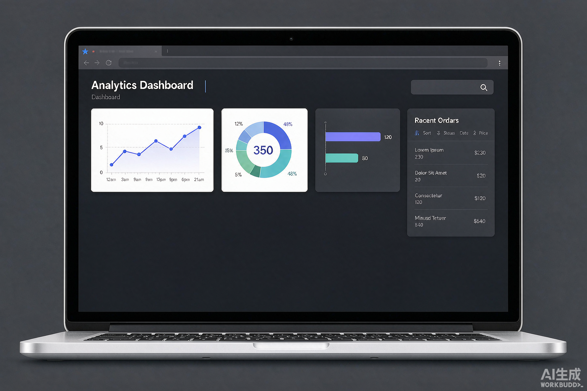
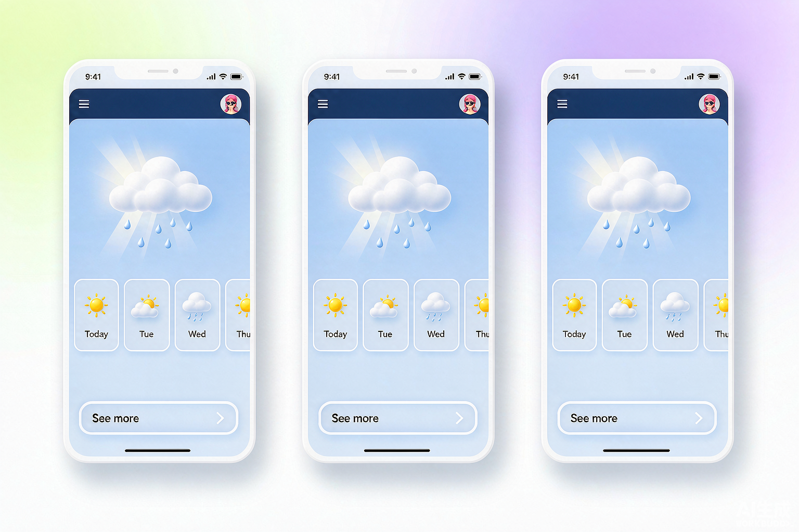
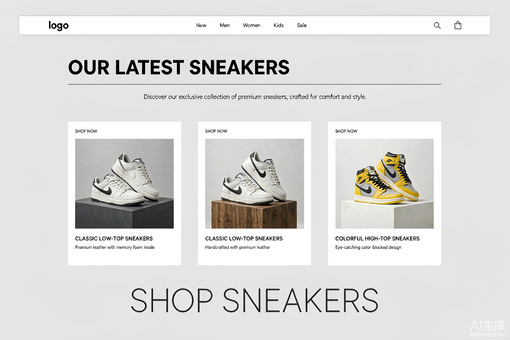
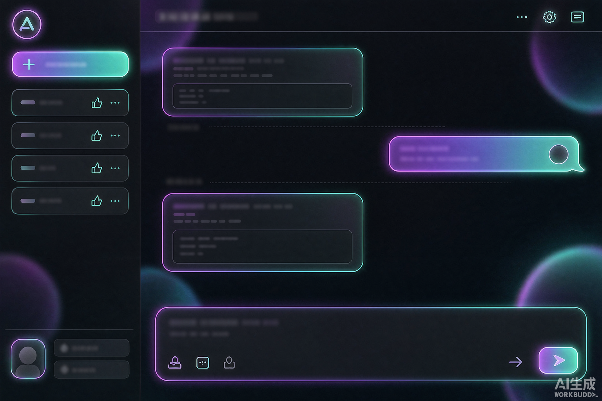

星图 · 数据可视化平台
面向运营团队的可视化分析平台，支持多数据源接入、拖拽式图表搭建与实时数据大屏，帮助业务方将报表制作时间从数小时缩短到几分钟。
每一个项目都是一次从想法到落地的完整旅程，以下是其中的精选作品。

面向运营团队的可视化分析平台，支持多数据源接入、拖拽式图表搭建与实时数据大屏，帮助业务方将报表制作时间从数小时缩短到几分钟。

一款主打「轻量与优雅」的跨端天气应用，采用定位 + 手动城市管理双模式，提供逐小时预报、空气质量与生活指数提醒，界面动效随天气实时变化。

为潮流球鞋品牌打造的独立电商站点，重点打磨首屏加载性能与移动端购物体验，Lighthouse 性能得分 95+，支持暗色模式与无障碍浏览。

基于大语言模型的 Web 对话助手，支持多轮上下文记忆、Markdown 渲染与流式输出，可自定义助手人设并沉淀为知识库问答。